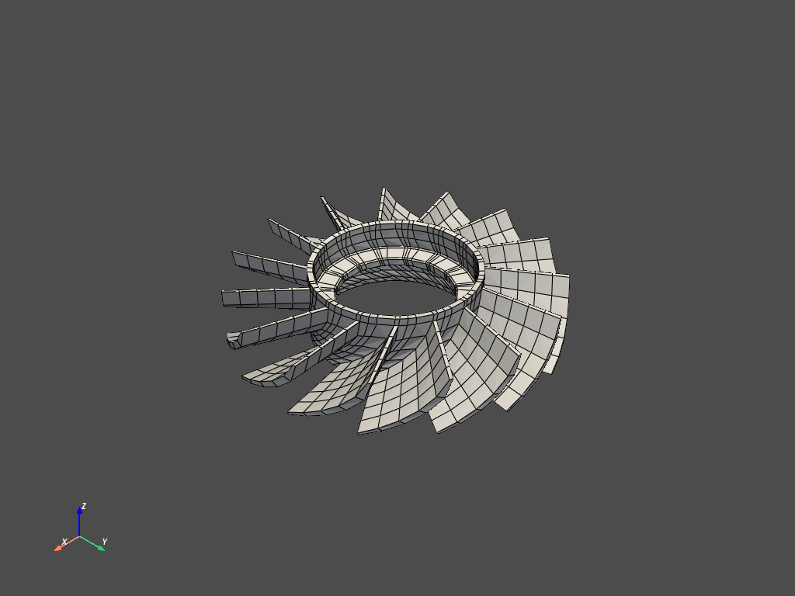

Note
Click here to download the full example code
Cyclic Model Visualization¶
Visualize and animate a full cyclic model. This model is based on the jetcat rotor.
First, load the rotor. Notice how printing the rotor class reveals the details of the rotor result file.
# sphinx_gallery_thumbnail_number = 2
from ansys.mapdl.reader import examples
rotor = examples.download_sector_modal()
print(rotor)
Out:
PyMAPDL Result
Units : User Defined
Version : 15.0
Cyclic : True
Result Sets : 48
Nodes : 460
Elements : 210
Available Results:
EMS : Miscellaneous summable items (normally includes face pressures)
ENF : Nodal forces
ENS : Nodal stresses
ENG : Element energies and volume
EEL : Nodal elastic strains
ETH : Nodal thermal strains (includes swelling strains)
EUL : Element euler angles
EPT : Nodal temperatures
NSL : Nodal displacements
RF : Nodal reaction forces
Plot the rotor and rotor sectors
Note that additional keyword arguments can be passed to the plotting
functions of pymapdl-reader. See help(pyvista.plot for the
documentation on all the keyword arguments.
rotor.plot_sectors(cpos='xy', smooth_shading=True)
rotor.plot()

- 
Out:
[(6.501737475645392, 6.524253991464702, 6.091648804199281),
(-0.0006467092362623106, 0.021869806583048046, -0.41073538068237314),
(0.0, 0.0, 1.0)]
Plot nodal displacement for result 21.
Note that pymapdl-reader uses 0 based cumulative indexing. You could also
use the (load step, sub step) (4, 3).
rotor.plot_nodal_displacement(20, show_displacement=True,
displacement_factor=0.001,
overlay_wireframe=True) # same as (2, 4)
Out:
[(6.540205322486949, 6.56272183830626, 6.051282219978583),
(-0.0006467092362623106, 0.021869806583048046, -0.48956981174462877),
(0.0, 0.0, 1.0)]
Animate Mode 21¶
Disable movie_filename and increase nangles for a smoother plot
rotor.animate_nodal_solution(20, loop=False, movie_filename='rotor_mode.gif',
background='w', displacement_factor=0.001,
add_text=False,
nangles=30)

Out:
[(5.52155060432921, 5.5214282518334326, 5.110814907184016),
(3.164628201712816e-07, -0.00012203603295768417, -0.41073538068237303),
(0.0, 0.0, 1.0)]
Total running time of the script: ( 0 minutes 25.909 seconds)